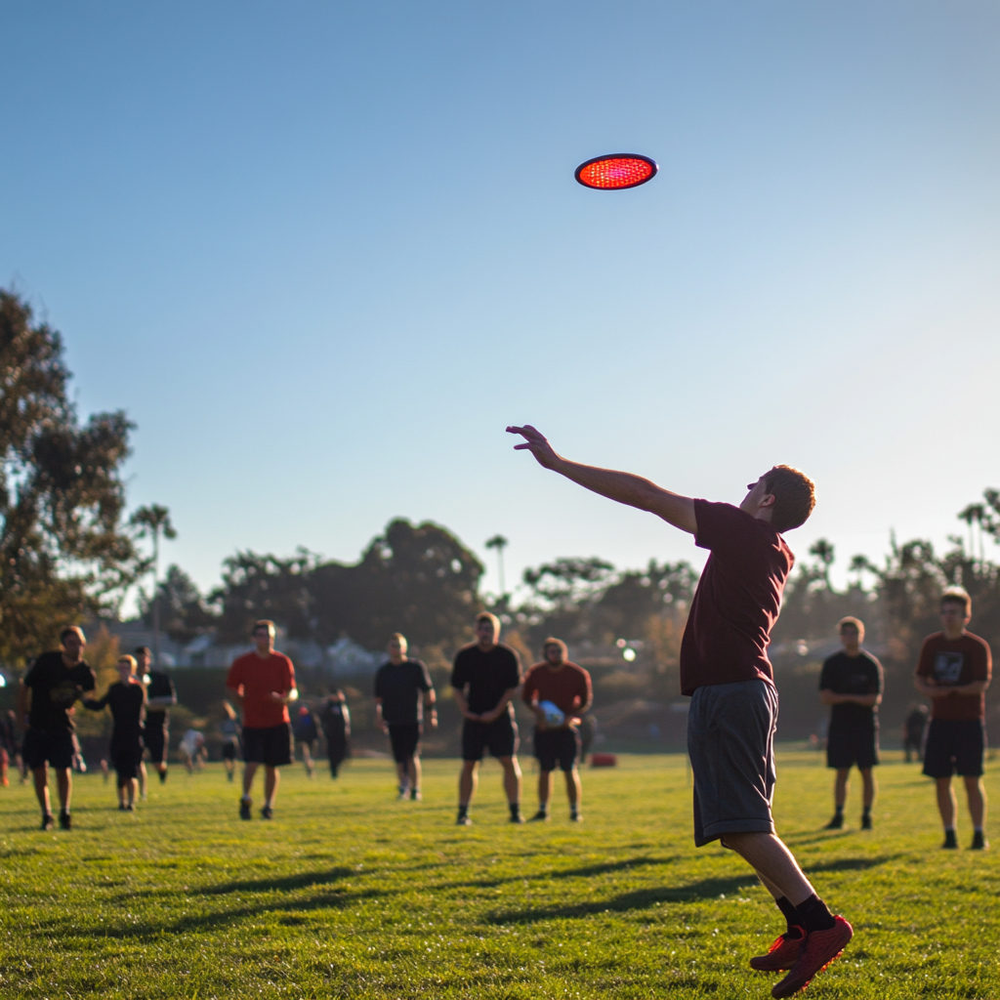
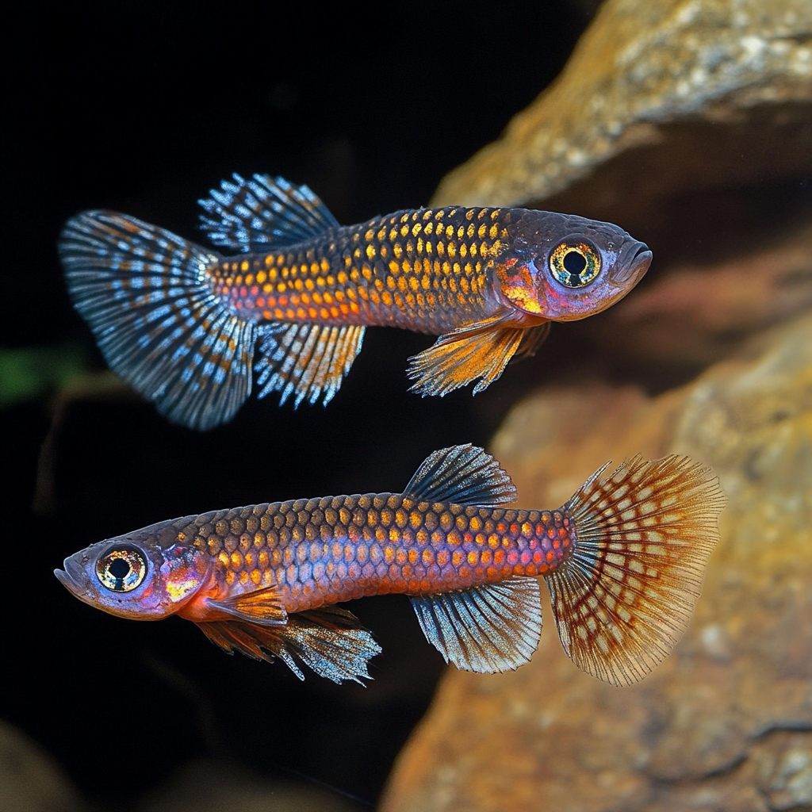

WHO AM I?
Barrie Robison
Department of Biological Sciences
Institute for Interdisicplinary Data Sciences
University of Idaho


WHO ARE YOU?
“…The course is designed to be”discipline agnostic” - each student is encouraged to use their own data, or public data sets that they deem important / interesting. …”
Briefly:
- Your name
- Your discipline
- Your degree progress
- Your technical proficiency
YVA

SEAN

MORJINA

ZOE
COURSE SUMMARY
Students completing this course will be able to:
Identify, understand, and describe the critical characteristics, needs, and expectations of the various audiences with whom they will communicate.
Develop and apply effective writing and presentation skills to communicate data-driven insights clearly and impactfully to both specialist and general audiences.
Implement reproducible research practices using literate programming (Quarto/Markdown) and version control (GitHub) to enhance the transparency and reproducibility of their work.
Create compelling narratives around data that are tailored to specific disciplines while remaining accessible to interdisciplinary audiences.
Critically evaluate and apply appropriate data visualization techniques to support written and verbal communications, enhancing the accessibility of complex data analysis results.
CENTRAL DOGMA
Who is the AUDIENCE and what is the GOAL?
THE AUDIENCE
What kind of audiences?
Can they be categorized or grouped?
THE GOAL
What kind of goals?
Can they be categorized or grouped?
THE STRATEGY
How can the goal be achieved with this audience?
Is this concept too abstract to discuss?
THE MEDIUM
What are the possible communication channels with our audience?
How do these channels align with our modes of communication (showing, speaking, writing)?
TECHNICAL COMPONENTS
Version Control
Artificial Intelligence
SUMMARY
Who is the AUDIENCE? What is the GOAL?
- Receptivity: Are they hostile to your message, or predisposed to it?
- Influence: Do they have the power to help you achieve your goal?
- Engagement: Are you competing with other factors for their attention?
- Expertise: How much prior knowledge do they have related to your content?
- Needs: What type of affordances must you provide? Consider the required access to technology for your communication.
- Expectations: Are there disciplinary or cultural norms or expectations (e.g. formality, format, content)?
- Diversity: How big is the audience, and how much variation in the above characteristics may exist among individuals?
- Goals: Your audience has goals too. How do their goals align with yours?
Overarching goals (Long-term Objectives): Get the job, sell the product, get elected, confirm or refute your hypothesis.
Communication-Specific goals (Immediate Objectives): Inform the voters, educate the students, persuade the legislator, motivate the staff, solve a problem.
Multiple Goals: Most communications will have multiple goals across these categories. The challenge is often in balancing these goals effectively.
Alignment: Ensure that your communication-specific goals align with your overarching goals and are appropriate for your audience characteristics.
Measurability: Where possible, try to make goals specific and measurable. This can help in evaluating the success of your communication.
Flexibility: Be prepared to adjust your goals based on feedback or changing circumstances.